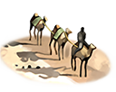
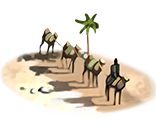

RTR: Imperium Surrectum
RTR: Imperium SurrectumSilk Trade
4 levels, each replacing the one before it — you upgrade in place rather than building alongside.
Silk Trader (Urban) → Silk Caravan (Urban) → Silk Market (Urban) → Silk Trade Route (Urban)
Pictures are the game's own building art. Where a culture ships none of its own, the game falls back to another culture's, and that is what is shown here.
Levels at a glance
| Level | Cost | Build time | Minimum settlement | Upgrades to | Level | Cost | Build time | Minimum settlement | Upgrades to | ||
|---|---|---|---|---|---|---|---|---|---|---|---|
| Silk Trader (Urban) | 2,500 | 2 | large town | Silk Caravan (Urban) |  | Silk Caravan (Urban) | 5,000 | 5 | city | Silk Market (Urban) | |
| Silk Market (Urban) | 12,500 | 8 | large city | Silk Trade Route (Urban) |  | Silk Trade Route (Urban) | 19,000 | 12 | huge city | — |
Costs in denarii, build time in turns.
Silk Trader (Urban)

Trader of otherworldly fabrics for the world’s wealthiest.
A rare breed of merchant, the Silk Trader brings forth treasures so soft and shimmering they practically glow under the Mediterranean sun.
Silk from far-off lands captivates nobles and commoners alike, though only the wealthiest can afford it.
This trader is not just selling fabric, he’s selling mystery, magic, and a hint of envy. As he hawks his goods, the city’s coffers swell, and its reputation for opulence shines.
| Cost | 2,500 denarii | Build time | 2 turns | Minimum settlement | large town | Upgrades to | Silk Caravan (Urban) |
Requirements — all of these must hold before this level can be built.
- any faction
- Local Market at Local Barter or above is built here
- the region does not have the hidden resource
nobuild(nobuilding) - the region has the silk resource
- no building tagged
urban_exploitsis built or queued here (no_other_urban_exploits) - Government Building
Show the condition as the game files write it
factions { all, } and building_present_min_level market trader and nobuilding and resource silk and no_other_urban_exploits and requires_gov
What it does
- +1 trade income
Show 2 effects that apply only in the circumstances shown
- +1 population growth — only when
not hidden_resource silk_road - +2 population growth — only when
hidden_resource silk_road
Silk Caravan (Urban)

A caravan of shimmering cloth and tales from afar.
The Silk Caravan, a moving marvel, snakes its way across blistering deserts and treacherous mountains, bearing shimmering bolts of silk from lands so distant they might as well be on the moon.
With each journey, it brings more than just fabric; it carries stories of exotic lands, odd customs, and food you wouldn’t dream of eating.
The caravan is a glimpse into the mystical East, with tales and treasures that enrich the city almost as much as the silk itself.
| Cost | 5,000 denarii | Build time | 5 turns | Minimum settlement | city | Upgrades to | Silk Market (Urban) |
Requirements — all of these must hold before this level can be built.
- any faction
- Local Market at Local Market or above is built here
- the region does not have the hidden resource
nobuild(nobuilding) - the region has the silk resource
- Government Building
Show the condition as the game files write it
factions { all, } and building_present_min_level market market and nobuilding and resource silk and requires_gov
What it does
- +3 trade income
Show 2 effects that apply only in the circumstances shown
- +2 population growth — only when
not hidden_resource silk_road - +3 population growth — only when
hidden_resource silk_road
Silk Market (Urban)

A market of silk, wealth, and dreams slightly out of reach.
The Silk Market, where bolts of silk hang like the dawn sky and feel like water flowing through one’s fingers. Here, tailors haggle, noblewomen gaze, and merchants do their best not to drool over colours only the gods themselves could create.
Amid the barter and banter, the city’s economy flourishes, with the market’s prestige attracting wide-eyed admirers who marvel at these far-off luxuries that they can’t afford, but are certainly happy to gawk at.
| Cost | 12,500 denarii | Build time | 8 turns | Minimum settlement | large city | Upgrades to | Silk Trade Route (Urban) |
Requirements — all of these must hold before this level can be built.
- any faction
- Local Market at Forum or above is built here
- the region does not have the hidden resource
nobuild(nobuilding) - the region has the silk resource
- Government Building
Show the condition as the game files write it
factions { all, } and building_present_min_level market forum and nobuilding and resource silk and requires_gov
What it does
- +5 trade income
- +1 public order (happiness)
Show 2 effects that apply only in the circumstances shown
- +2 population growth — only when
not hidden_resource silk_road - +3 population growth — only when
hidden_resource silk_road
Silk Trade Route (Urban)

The city’s veins run rich with silk, and wealth.
With a steady Silk Route, the city stands tall, glittering with a wealth that is as delicate as it is expensive. The mere mention of a silk trade route elevates the city’s standing and its citizens’ taste for the finer things in life.
Nobles strut in shimmering attire, commoners whisper of riches beyond reach, and the economy practically gleams as silk flows in, a symbol of luxury, power, and a dangerously comfortable life.
| Cost | 19,000 denarii | Build time | 12 turns | Minimum settlement | huge city |
Requirements — all of these must hold before this level can be built.
- any faction
- Local Market at Large Forum or above is built here
- the region does not have the hidden resource
nobuild(nobuilding) - the region has the silk resource
- anywhere in your empire does not have the hidden resource
silk_supply_built(not_silk_supply_built) - Direct Rule or Homeland
Show the condition as the game files write it
factions { all, } and building_present_min_level market great_forum and nobuilding and resource silk and not_silk_supply_built and direct_govs
What it does
- +6 trade income
- +1 public order (happiness)
Show 2 effects that apply only in the circumstances shown
- +2 population growth — only when
not hidden_resource silk_road - +3 population growth — only when
hidden_resource silk_road
What the shorthands in those conditions stand for (5)
These are the mod's own, quoted from the game files unchanged.
| Shorthand | Stands for | Shorthand | Stands for | Shorthand | Stands for | Shorthand | Stands for |
|---|---|---|---|---|---|---|---|
direct_govs | building_present governmentC or building_present governmentD | no_other_urban_exploits | no_building_tagged urban_exploits queued | nobuilding | not hidden_resource nobuild | not_silk_supply_built | not hidden_resource silk_supply_built factionwide |
requires_gov | building_present governmentA or building_present governmentB or building_present governmentC or building_present governmentD or not is_player |